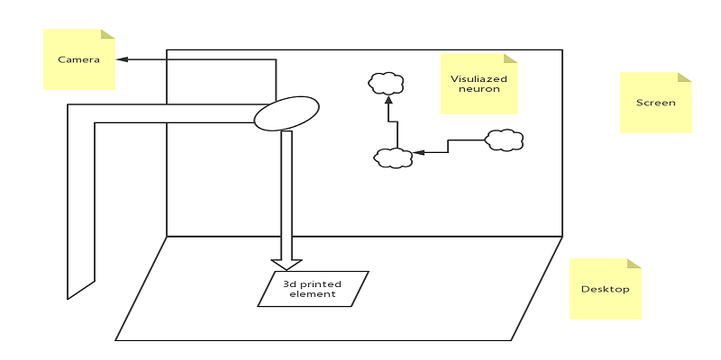

Introduction
We use disordered particles to represent the synapses of neurons, and use geometric figures to represent different treatment methods for Alzheimer's patients. As the geometric figures enter the camera and are identified to the coordinates, this position will be Start to attract particles, as the position increases, the particles become more and more orderly.
Concept and Background Research
Alzheimer's disease (Latin: Morbus Alzheimer, German: Alzheimer-Krankheit, English: Alzheimer's disease, abbreviation: AD), commonly known as Alzheimer's disease, senile dementia, is a neurological disease that progresses slowly and deteriorates over time. Degenerative disease, which accounts for 60% to 70% of the causes of dementia. The most common early symptom is loss of short-term memory (difficulty remembering recent events). As the disease progresses, symptoms may develop gradually and include language impairment, disorientation (including getting lost easily), emotional lability, loss of motivation, and inability to care for oneself and many behavioral problems. When the condition worsens, the patient is often disconnected from family or society and progressively loses function, eventually leading to death. Although the course of the disease varies from person to person, the average remaining life after diagnosis is about three to nine years.
At present, the treatment methods for Alzheimer's disease include drug therapy, music therapy, emotional support, etc. I want to 3D print drug symbols, music symbols, emotional symbols, and train a yolo model for camera recognition. On the desktop we Draw a plane diagram with three neuron nodes. When we place the drug symbol in the corresponding position, the particle effect of the first neuron will gradually appear on the TV screen, and it will slowly spread to the next neuron, and then the music When the symbol is placed in the corresponding position, the particle effect of the second neuron will appear. At this time, the point of the particle will be brighter. When the emotional symbol is placed in the corresponding position, the three neurons will be lit, and the particles will be in the three neurons. The flow between, presenting the neuronal changes in Alzheimer's patients during the process of being data.
Technical Implementation
First, I printed yellow triangles, orange squares, blue hexagons, and pink circles as different treatment methods for Alzheimer's patients, representing drug therapy, emotional therapy, exercise therapy, and music therapy.
Then I collected a large number of pictures of four shapes from different perspectives, and marked the position of the shape through lableImage. Then upload it to colab for training based on yolov3, download the trained model to the local, read the model through the darknet of python+opencv, and detect the coordinates of a specific shape in the picture in real time combined with the picture of the camera.
The coordinate value is sent from the Python code to the Processing code through UDP communication Processing is responsible for visual presentation.
Among them, Processing creates a particle group. When no coordinate information is received, the particles are disordered and move randomly in the picture, just like the difficulties encountered by Alzheimer's patients. It is difficult for them to organize their previous memories in order. tidy up. However, starting from receiving the first particle coordinates, the particles in the screen will start to slow down when passing the first coordinates. When the second shape is placed on the screen, the particles will flow between these two shapes, Particles start to become orderly.
With the increase of the shape, that is, the increase of the treatment method and frequency, the particles will flow between each shape, and the synapses of neurons will transmit information to each other in an orderly manner, and the patient's symptoms will be relieved at this stage.
Reflection and Future Development
In the future, I hope to collect more specific image symbols, such as printing music and drug patterns, for training data, and then constrain the picture within a png of the brain structure in the presentation of the picture, making the step of particle-mapped neurons more intuitive.
References
- https://zh.wikipedia.org/zh-hans/%E9%98%BF%E8%8C%B2%E6%B5%B7%E9%BB%98%E7%97%87
- https://bestpractice.bmj.com/topics/zh-cn/317
- https://colab.research.google.com/github/ultralytics/yolov3/blob/master/tutorial.ipynb
- https://colab.research.google.com/github/hardik0/Deep-Learning-with-GoogleColab/blob/master/Darknet_YOLOv3_Guns_Detection.ipynb
- https://blog.csdn.net/qq_40902709/article/details/109996425
- http://culebra.technology/culebra-1/